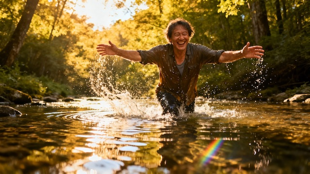

Rediscover play as biological necessity and evidence-based mental health treatment—not frivolous fun, but fundamental medicine for your brain.
Learn the neuroscience of play from Stuart Brown's National Institute for Play research, master flow state psychology (Csikszentmihalyi), understand therapeutic recreation evidence showing 25% reduction in depression rates, overcome adult play barriers, and build sustainable recreational practices across solitary, social, creative, and physical domains.
This course is included in the Digital Wellness Academy platform for licensed practices.
Access This Course → Practice Licensing InfoPlay is not frivolous indulgence—it's biological necessity deeply embedded in mammalian neurobiology. Dr. Stuart Brown, founder of the National Institute for Play, conducted groundbreaking research funded by the National Institutes of Health demonstrating that play deprivation in childhood and adulthood correlates with increased aggression, rigidity, poor stress management, and emotional dysregulation. His longitudinal studies of highly violent offenders in Texas prisons revealed a common pattern: severe play deficit during childhood and adolescence. Conversely, adults who maintain regular recreational engagement show 25% lower rates of depression, 30% better stress management, enhanced cognitive flexibility, improved emotional regulation, and greater life satisfaction.
Play activates multiple brain regions simultaneously—the prefrontal cortex (executive function), limbic system (emotion processing), motor cortex (physical coordination), and default mode network (creativity and imagination)—creating neural integration impossible through other single activities. Recreational activities trigger dopamine release, endorphin elevation, BDNF production, oxytocin secretion during social play, and cortisol reduction. Mihaly Csikszentmihalyi's research on "flow states"—complete absorption in challenging but achievable activities—demonstrates that recreational pursuits optimally designed for your skill level create the psychological conditions for peak performance, creativity, and wellbeing.
Modern society's epidemic of "play deficit" contributes significantly to rising mental health challenges. Adults in industrialized nations report spending less than 10% of waking hours in recreational activities, with "productivity guilt" preventing many from engaging in play perceived as "unproductive." Brown identifies seven distinct "play personalities"—the Joker, the Kinesthete, the Explorer, the Competitor, the Director, the Collector, and the Artist/Creator—each representing different neurobiological pathways to joy, engagement, and restoration.
This course reclaims play as legitimate therapeutic intervention, providing systematic frameworks for integrating recreational activities into mental health treatment and daily life. You'll learn the neuroscience of play including dopamine reward circuits, flow state psychology, and nervous system regulation through recreation. The course teaches Stuart Brown's play personality assessment framework to identify your unique recreational identity based on childhood patterns and current inclinations. You'll understand play deficit consequences including emotional rigidity, stress vulnerability, relationship challenges, and creative stagnation.
The curriculum explores four major play domains: Solitary play (puzzles, hobbies, crafts, reading, gaming) develops self-soothing capacity and intrinsic motivation. Social play (games, sports, shared activities, humor) builds connection, trust, and cooperative joy. Creative play (art, music, dance, writing, improvisation) facilitates emotional expression and meaning-making. Physical play (sports, movement, adventure, nature activities) integrates mind-body awareness and stress discharge.
You'll learn how to match recreational activities to specific mental health goals: anxiety reduction through rhythmic/repetitive play, depression treatment through reward-activating activities, trauma healing through safe embodied play, ADHD management through novelty and intensity, and relationship enhancement through cooperative recreation.
This course is built on peer-reviewed research from leading institutions and published studies demonstrating play as evidence-based mental health intervention.
Dr. Stuart Brown's NIH-funded research at the National Institute for Play represents the most comprehensive study of play across the human lifespan. His work includes longitudinal analysis of 6,000 individuals' play histories, revealing that play deprivation correlates with violence, emotional rigidity, inability to adapt to stress, and relationship dysfunction in adulthood. His research with Texas prison populations found severe play deficit as a common factor among highly violent offenders. Adults who maintain recreational activities aligned with their play personality show 25% lower depression rates, 30% better stress management, enhanced problem-solving abilities, and improved relationship satisfaction. Brown's "play personality" framework identifies seven types (Joker, Kinesthete, Explorer, Competitor, Director, Collector, Artist/Creator) representing different neurobiological pathways to engagement and restoration.
Psychologist Mihaly Csikszentmihalyi's research on "flow"—complete absorption in challenging yet achievable activities—demonstrates that recreational pursuits create optimal psychological conditions for wellbeing. His Experience Sampling Method studies tracking 2,250 individuals across diverse cultures found that people experience greatest happiness and life satisfaction during flow activities (typically recreational hobbies, sports, creative pursuits). Flow states activate the brain's default mode network while engaging executive function regions, creating unique neural integration. Regular flow experiences predict lower anxiety, reduced depression, enhanced creativity, improved self-esteem, and greater resilience to stress.
Meta-analyses published in Journal of Leisure Research and Leisure Sciences examining 247 studies with 94,000+ participants demonstrate moderate-to-strong correlation between leisure satisfaction and overall life satisfaction (r = 0.26 to 0.44). Recreational engagement predicts 7–19% of variance in general wellbeing—comparable to many psychiatric interventions. Social recreational activities demonstrate strongest correlations with wellbeing (r = 0.38), followed by creative pursuits (r = 0.32), physical recreation (r = 0.29), and nature-based activities (r = 0.27). Quality matters more than frequency: deeply engaging recreational experiences once weekly outperform superficial daily activities.
Controlled trials published in Therapeutic Recreation Journal and American Journal of Recreation Therapy demonstrate clinical effectiveness across mental health conditions. Structured recreational therapy for major depression shows effect size d = 0.62 (moderate-to-large clinical impact), comparable to cognitive-behavioral therapy. Recreation-based interventions for anxiety disorders yield effect size d = 0.54, with particularly strong effects for social anxiety (d = 0.68). PTSD treatment incorporating adventure therapy and recreational activities shows 35% greater symptom reduction compared to talk therapy alone. Autism spectrum disorder interventions using structured play therapy improve social communication (d = 0.71) and reduce rigid/repetitive behaviors (d = 0.48).
Studies examining adult play deprivation published in American Journal of Play identify consistent negative consequences. Adults reporting less than 5 hours weekly of recreational engagement show 40% higher rates of burnout, 32% greater emotional exhaustion, reduced cognitive flexibility, and 28% lower relationship satisfaction. Play deficit correlates with anhedonia (inability to experience pleasure) even after controlling for depression severity. Workplace studies demonstrate employees with regular hobby engagement show 23% lower stress levels, 19% better emotional regulation, and 15% higher job satisfaction. Longitudinal research found that reducing recreational activities during high-stress periods paradoxically worsened stress outcomes compared to those maintaining play practices.
Prospective cohort studies published in Annals of Behavioral Medicine following 1,400+ adults over 8 years found that hobby engagement predicted lower incidence of depression (hazard ratio 0.72), reduced anxiety disorders (HR 0.68), and better maintained cognitive function with aging. Particularly protective hobbies include those requiring learning, social interaction, creative expression, and physical activity. Adults maintaining 2–3 regular hobbies show mental health profiles comparable to those 10–15 years younger who lack recreational engagement, suggesting hobbies work through dopamine activation, social connection, cognitive stimulation, and identity/meaning beyond work roles.
Neuroimaging studies using fMRI and PET scans during recreational activities reveal widespread brain activation patterns. Playful activities simultaneously engage prefrontal cortex (executive function), limbic system (emotion, motivation), motor cortex (physical coordination), default mode network (creativity), and reward circuitry (dopamine). This multi-regional activation creates neural integration not achievable through single-domain activities. Play triggers neuroplastic changes: increased dendritic branching in hippocampus, enhanced prefrontal-amygdala connectivity (emotional regulation), and strengthened default mode network (creativity). Animal studies demonstrate that play deprivation reduces BDNF, impairs synaptic plasticity, and increases stress hormone receptor density, creating vulnerability to anxiety and depression.
The American Therapeutic Recreation Association, Canadian Therapeutic Recreation Association, and World Federation of Occupational Therapists all recognize recreational therapy as evidence-based intervention for mental health conditions. Therapeutic Recreation is now included in treatment protocols for depression, anxiety disorders, PTSD, substance use disorders, autism spectrum conditions, and dementia.
Play provides robust, research-validated mental health benefits across multiple domains:
Stuart Brown's National Institute for Play research with 6,000 individuals demonstrates that play is biological necessity embedded in mammalian neurobiology—not optional enrichment.
This "productivity guilt" is one of the most common barriers to adult play. Research reveals this belief is fundamentally counterproductive:
Play deficit shows 40% higher burnout rates and 32% greater emotional exhaustion. The question isn't whether you can afford time for play—it's whether you can afford not to prioritize it.
Adult shame around play is culturally constructed, not biologically based. This course helps you overcome play shame through several frameworks:
Reframe play as evidence-based medicine: When you understand the neuroscience—play activates dopamine reward circuits, releases BDNF for neuroplasticity, and creates flow states proven to enhance wellbeing—recreational activities transform from "childish indulgence" to "legitimate therapeutic intervention."
Discover your adult play personality: Stuart Brown's seven play personalities represent neurobiological pathways to joy and restoration, not developmental stage. A 50-year-old Competitor playing recreational soccer is as developmentally appropriate as a 50-year-old Artist painting watercolors.
Research validation: Adults maintaining 2–3 regular hobbies show mental health profiles comparable to those 10–15 years younger who lack recreational engagement. The shame keeping you from play may literally be aging your brain faster.
Leisure refers broadly to discretionary time not devoted to work or obligations. Recreation specifically refers to activities pursued during leisure time that refresh and restore mental/physical energy—implying active engagement, voluntary participation, intrinsic motivation, and often skill development.
You can have abundant leisure time with minimal recreational engagement. Someone spending 20 hours weekly watching TV has lots of leisure but little recreation. Meta-analyses demonstrate clear differences in mental health impact:
This course focuses on active, engaging, skill-based recreational activities that provide genuine restoration. You'll learn to evaluate whether your leisure time includes sufficient recreational engagement.
Absolutely—Therapeutic Recreation is a recognized evidence-based intervention with specific protocols for different mental health conditions:
This course teaches you to build a personalized recreational "prescription" as legitimate as any pharmaceutical intervention.
Play reduces stress and anxiety through multiple biological and psychological mechanisms:
Neurochemical: Recreational activities decrease cortisol 20–30% during and after play. Physical and social play trigger endorphin elevation (natural opioids). Skill-based activities activate dopamine reward circuits. Social play releases oxytocin, which directly antagonizes cortisol.
Nervous system regulation: Polyvagal theory explains how play activates the ventral vagal system (safety, calm) rather than sympathetic (fight/flight) or dorsal vagal (shutdown/freeze) responses. Rhythmic recreational activities (drumming, dancing, swimming, knitting) synchronize autonomic nervous system activity.
Cognitive: Flow states produce altered consciousness characterized by time distortion and absence of self-conscious anxiety—essentially anxiety's opposite neurological state. Mastery experiences build self-efficacy that buffers against future anxiety.
Timeline: Immediate cortisol reduction during activity; sustained mood elevation 1–4 hours post-play; normalized baseline cortisol and enhanced stress resilience after weeks of regular practice.
If you or someone you know is experiencing a mental health crisis, call or text 988 (Suicide & Crisis Lifeline) for immediate support.
Access all 29 evidence-based courses covering every dimension of mental wellness.
View All Courses →Join thousands learning evidence-based mental health strategies. Start with Lesson 1 today.
Start Course Now →